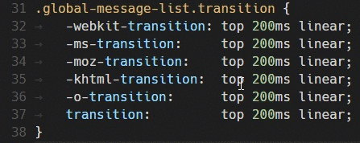

自学 Python 第 2 期
自学 Python 第 1 期 中以 pyenv 安装和管理 Python 版本，并且全局启用了 Python 3.6.5 版本，正式敲代码的时间到来，编辑器选择 Visual Studio Code，简称 VS Code，由微软出品，虽然我英语基础还凑合，但巨头出品且支持中文的编辑器无疑最便捷。
VS Code 功能强大，插件众多，完全熟悉需要一些时间，先大概了解下自己的编辑器，让代码编写有个更好的开始，VS Code 官方文档中文版
默认情况下，VS Code 文件管理器中包括所有文件夹（如 .git），我们可以通过
files.exclude setting文件配置不显示文件和文件夹的规则。你可以使用快捷键
⇧⌘\直接跳转到匹配的括号处。VS Code 支持动态多光标。你可以使用 Alt+Click 的方式添加第二光标（被渲染为较细的光标）。每个光标课根据其所在位置的上下文独立操作。最常用的多光标添加方式是使用快捷键
⌥⌘↓或⌥⌘↑向上或下插入光标。
⌘D 选择光标处的词，或下一个选中词出现的位置。⌘K ⌘D将添加一个光标到下一个选中词所出现的位置。


按住 Shift 或 Alt 时，用鼠标拖动可以按列选择文本。
最后，根据文档安装 Python 扩展。
Copyright © 2018 CC BY-NC-SA 4.0